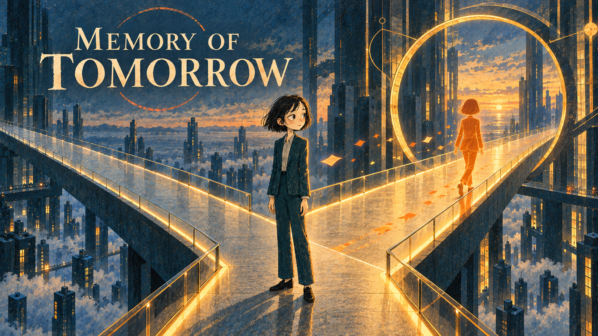
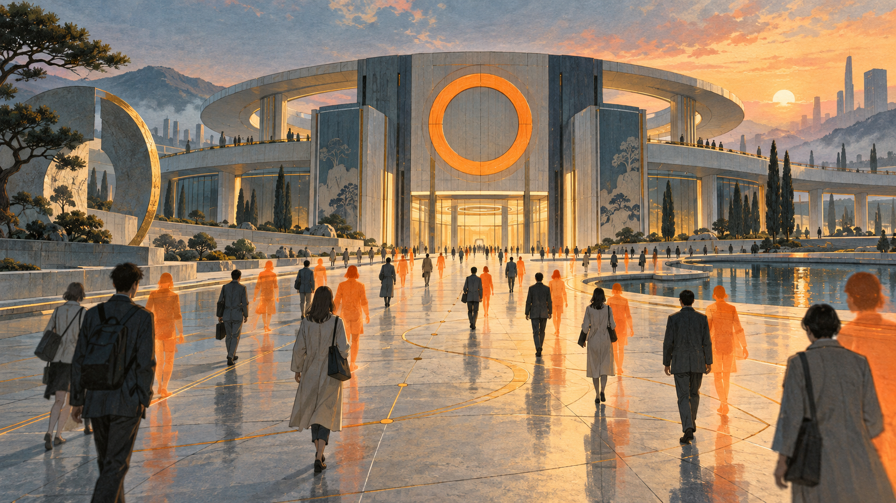
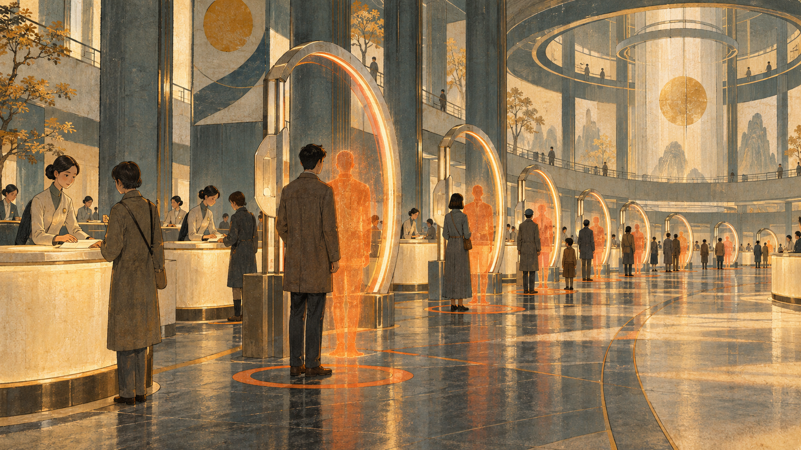
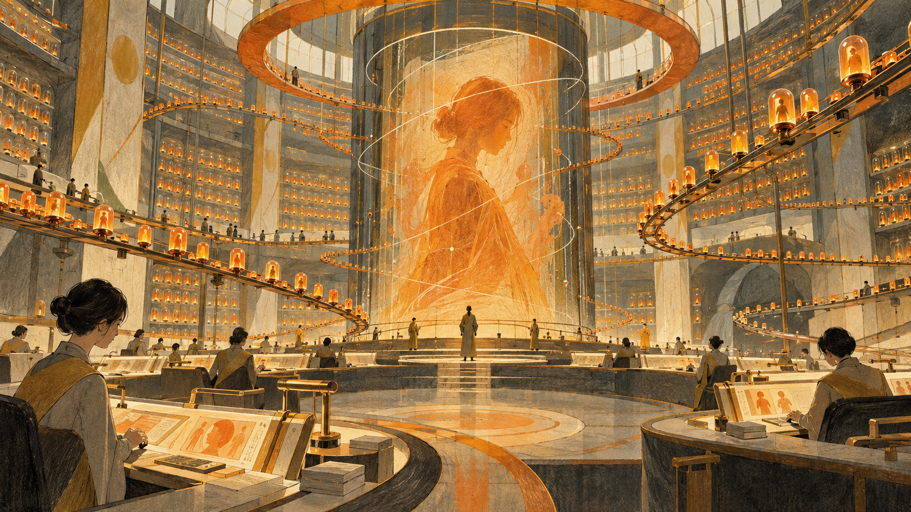
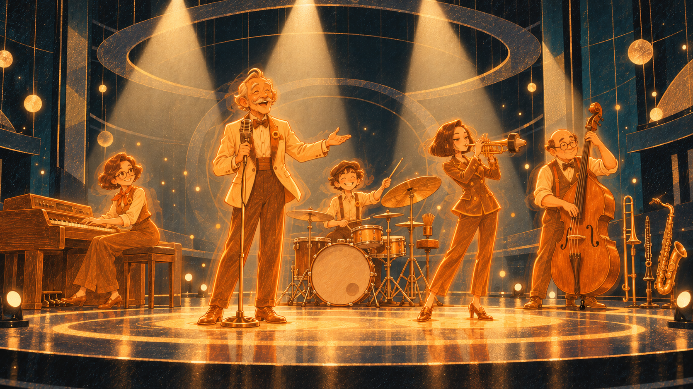
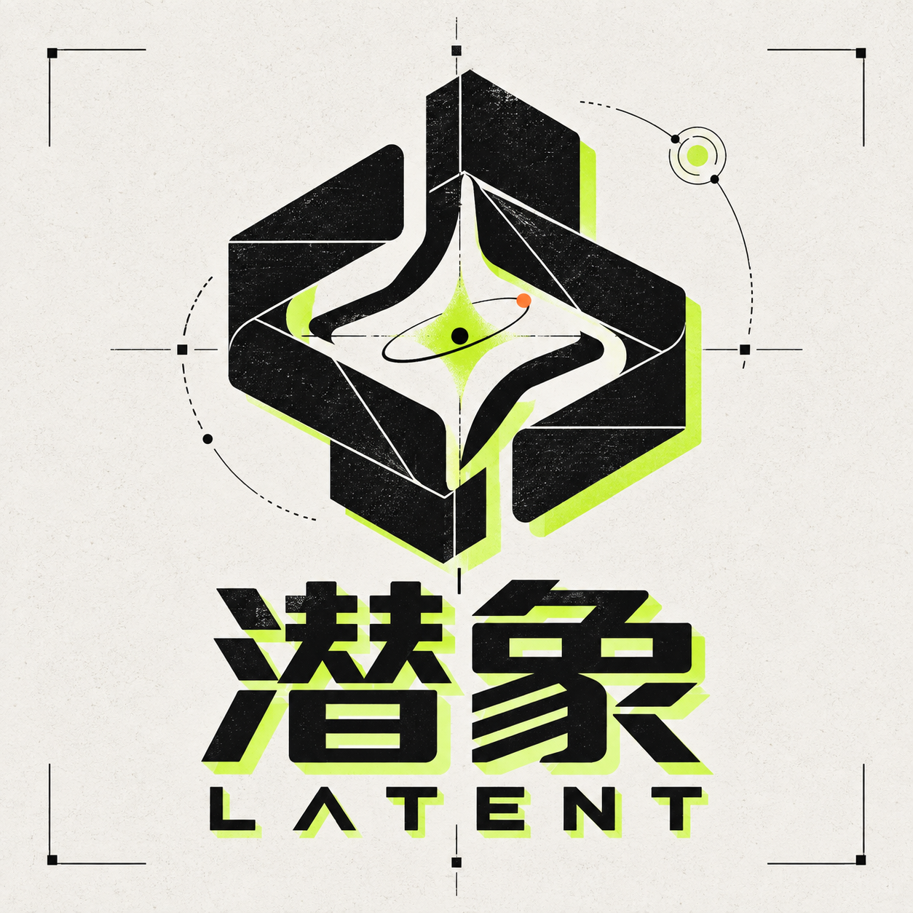

ARRIVE FIRST
橙色影子比现实早几秒抵达，替每个人预演即将发生的动作。

影子提前拥有“来自明天的记忆”。
它知道下一场雨、下一班列车，也知道你还未做出的选择。最初，它只是替人避开迟到、跌倒与错误。很快，人们开始沿着它走过的路径生活。
当未来被提前确定，正在经历的生活也可能只剩对未来的重复。被消除的不只是危险，还有迟疑、偶然，以及亲手选择之后才会出现的意义。
橙色影子比现实早几秒抵达，替每个人预演即将发生的动作。
它把尚未发生的未来保存成记忆，让意外看起来可以被管理。
当所有人都开始跟随影子，安全逐渐变成另一种失去。
明日，已经替你想好。
SHADOW 是全球“明日记忆”基础设施的建立者。通过捕获未来数秒的行为回声，公司为城市交通、公共安全与个人决策提供预测服务，让每一次选择都更早、更稳、更接近正确答案。

让现实与预测保持同步。市民在环形终端完成影子校准，并领取属于自己的下一步。

每一次提前发生的动作都会被保存、比较并重新分发。这里记住了城市尚未经历的明天。

悬停查看历史切片，点击节点展开完整档案。
一张动作草图上的橙色轮廓，比研究者的手势提前了0.4秒。七分钟后，同样的现象再次发生。未来第一次留下了可以被测量的痕迹。
“If tomorrow arrives before we can choose it,
then certainty is not a gift.”

一支复古爵士乐队，在故事结束后继续演奏。影子负责抢拍，现实负责追赶。
我们把尚未显现的事物，变成可以被看见、听见和记住的影像。

TEAM ID / LATENT–01